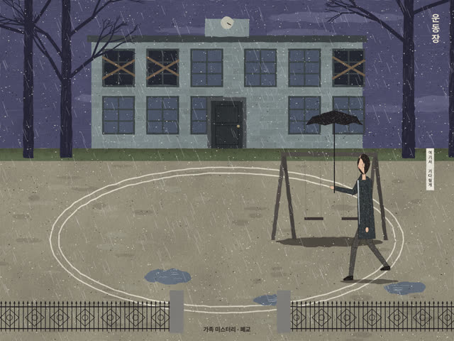
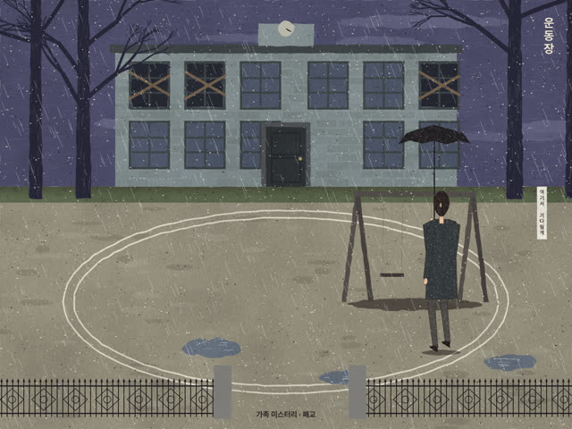
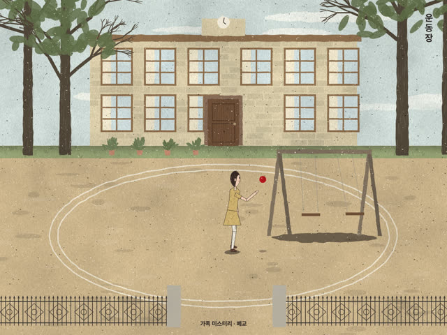
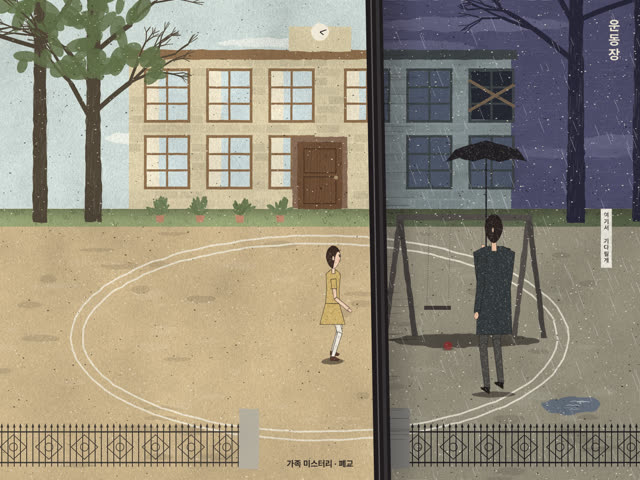
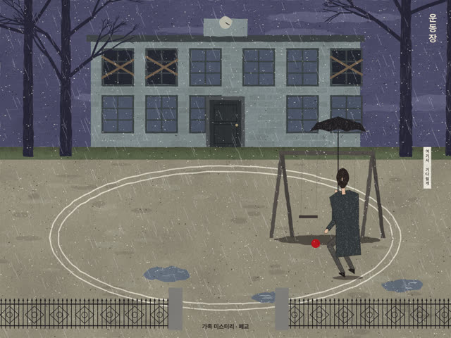
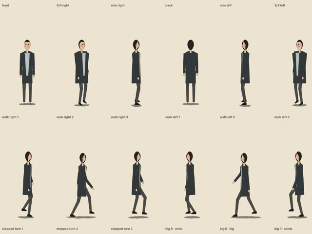

작업 흐름
- 입력
- 주제 한 줄(예: 문 닫은 이발소에 돌아온 손녀, 비 오는 날 폐교 운동장에 온 아빠)
- 브리프
- 분위기 · 장소 이름 · 아래 제목 줄, 접은 원근으로 배치한 장소(벽 선에 선 것 · 바닥에 눕힌 것 · 벽과 바닥이 만나는 높이), 두 번의 찍기(지금 · 그때)와 돌아왔을 때 바뀌는 진홍 단서, 인물(키 · 무게 · 옷 · 든 것), 박자표, 소리
- 만들기
- 한 함수로 두 판을 같은 배치로 칠하기(벽 · 평면 바닥 · 키트 · 판화 매체), 캐스트 시트(한 바퀴 · 좌우 걷기 · 발을 옮겨 도는 회전 · 좌우 큰 동작 · 얼굴)를 먼저 채점, 걷기 · 회전 · 키 포즈로 박자 키잉, 롤러 두 번과 바뀌는 층
- 확인
- 결정성, 매 순간 살아 있음, 찍은 질감 · 톤 다운 색 · 작은 진홍 하나 · 두 번째 강한 색 없음 · B가 진짜 다른 찍기, 무릎 · 엉덩이 · 팔꿈치 · 목 · 기울기 · 발 닿음 · 손 닿음 · 디딘 발 고정 · 걷는 방향, 깜빡임 · 모으기와 회복 · 발 딛는 회전 · 걸음 빠르기 · 현재 → 과거 → 바뀐 현재 형식, 소리
- 출력
- 소리가 있는 1440×1080 MP4(24 fps), 포스터 스틸, 클릭하면 소리가 나는 라이브 페이지, 콘택트 시트, 캐스트 시트
node printmade-scene/scripts/new-scene.mjs my-scene
node printmade-scene/scripts/render.mjs my-scene/index.html --cast
node printmade-scene/scripts/check.mjs my-scene/index.html
node printmade-scene/scripts/render.mjs my-scene/index.html --sheet 12 --scale .5
node printmade-scene/scripts/render.mjs my-scene/index.html요구 사항: Node 18+와 Playwright Chromium, ffmpeg. 네트워크 · npm 설치 · GPU가 필요 없습니다(14초 영상 렌더가 약 35초). 단계별 순서는 SKILL.md에 있습니다.
샘플
원본 글에 없는 주제 두 개를 브리프부터 새로 만든 장면입니다. 카드를 누르면 새 탭에서 그 순간부터 라이브 페이지가 열립니다. 브라우저가 같은 코드로 그리고 소리를 냅니다.
폐교 운동장 예제 · 14초
비 오는 해 질 녘, 창이 판자로 막힌 폐교. 검은 우산을 든 아빠가 오른쪽에서 걸어 들어와 그네 앞에 서고, 발을 옮겨 돌아서 등을 보입니다. 롤러가 지나가면 같은 판이 여름 오후로 다시 찍히고, 단발머리 딸이 빨간 공을 들고 걸어 나와 몸을 젖혔다가 그네 쪽으로 던집니다. 롤러가 돌아오면 비 오는 운동장 그네 밑에 빨간 공이 놓여 있고, 아빠가 천천히 웅크립니다. 학교는 정면, 운동장과 트랙은 위에서 본 평면, 앞쪽 철책은 인물 앞에 그리는 층입니다.






문 닫은 이발소 시작 템플릿 · 13.4초
new-scene.mjs가 복사하는 시작 템플릿입니다. 비 오는 밤, 몇 년째 문 닫은 이발소에 손녀가 들어와 낡은 이발 의자의 팔걸이를 만집니다. 같은 판이 따뜻한 오후로 다시 찍히면 할아버지가 진홍 이발 보를 뒤로 모았다가 펼칩니다. 현재로 돌아오면 그 보가 의자에 걸쳐져 있고, 손녀는 움찔했다가 발을 옮겨 이쪽을 돌아봅니다.
실제 작품
이 레포에서 만든 스킬입니다. 출발점은 1인 회사 대표 전혜정이 브런치에 쓴 「인디 게임을 만들자」입니다. 자신의 영화 시나리오를 가족형 공포 어드벤처 게임 「마마」로 만드는 이야기이고, 김도윤 작가의 컨셉 아트가 실려 있습니다. 그 그림은 판화 스타일에 동양화 특유의 왜곡된 원근을 씁니다. 글은 거실은 원근이 맞는데 러그는 맞지 않는다고 설명하고, 그 그림을 잘라 3D 모델에 손으로 입히려던 시도는 망했다고 적습니다. 이 스킬은 그래서 3D로 가지 않고 접은 원근을 2D로 직접 그리고, 그 안에 사는 것만 움직입니다. 오른쪽 클릭으로 방의 과거를 보는 게임의 장치는 현재 → 과거 → 바뀐 현재로 두 번 찍는 형식이 되었습니다. 원본의 그림 · 인물 · 저택 · 이야기는 쓰지 않았고, 시작 템플릿과 예제는 모두 이 레포에서 새로 설계한 것입니다.
링크
- SKILL.md 워크플로
- 폴더 lib · scripts · references · templates · examples
- README.md 빠른 시작
- references/BRIEF.md 브리프 틀과 채점 기준
- references/LOOK.md 원본 그림에서 읽은 화풍
- references/PLATE.md 접은 원근과 장소 키트
- references/FIGURE.md 인물 리그 · 관절 범위 · 캐스트 시트
- references/MOTION.md 무게 · 디딘 발 · 숨
- references/SOURCE.md 가져온 것과 가져오지 않은 것
- references/LESSONS.md 겪은 문제와 해결